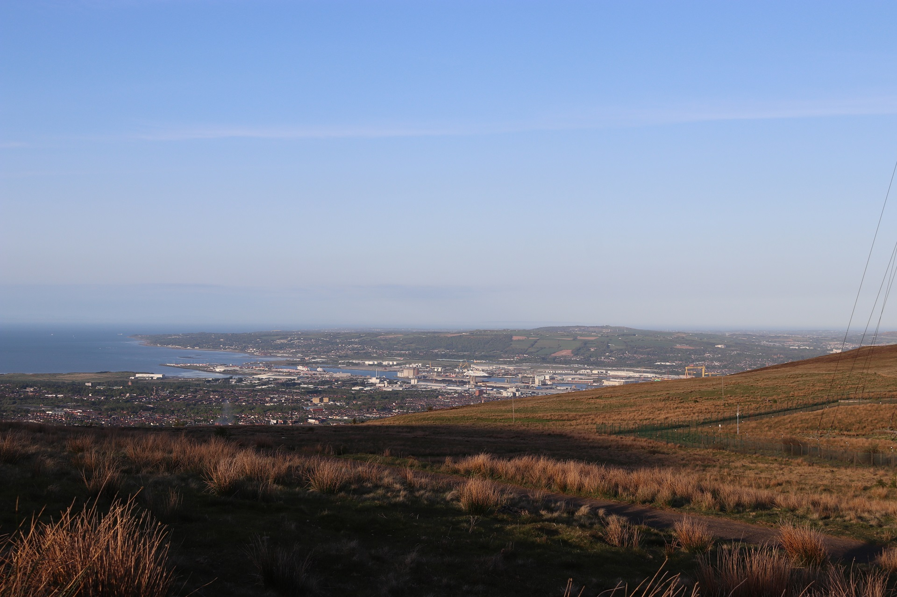
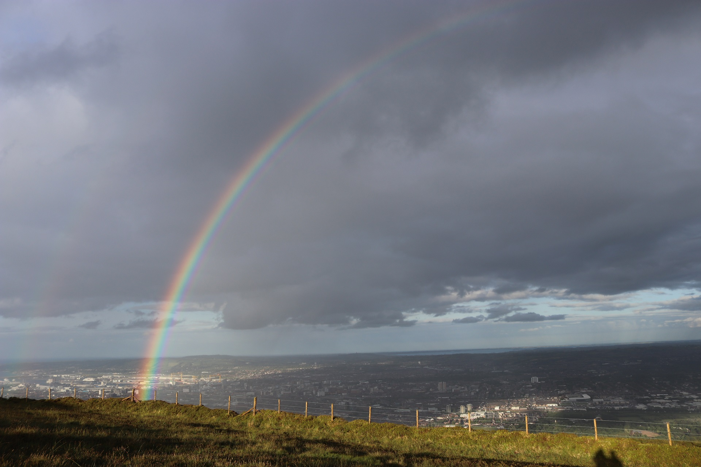

This walk can be busy on a nice day as it seems that everyone and their dog comes here on a good day. This means that the car park fills up quickly so you have to find somewhere on the road to park. Don't let that put you off as you get good panaramic views of Belfast. The routes on this mountain are simple. They are well marked out and well you are just following a path.
These two routes are dependent on your time and energy.
This route takes in the summit, and funnily enough is called The Summit Trail. You may be thinking how can this be a dander when it takes in the summit. However, at 3km this makes for a short route. The route is easy. Just follow the road to the transmitters. Once there veer left and follow the road to the top. This is quite a boring summit so after a few seconds when you've had enough, head straight over to take the path down. Follow this path until you reach the main road back. That's it really!
The Ridge Trail makes for a pleasant walk on a clear day. At 8km this gives your legs a good stretch. There is some climbing but it is at a more gentle pace. Follow the road until on your right you reach a sign saying 'Ridge Trail'. Then all you have to do is follow the path. Easy! It will eventually take you to the transmitters and then you follow the main road back.
You can combine these two routes to make a more challenging and longer route.